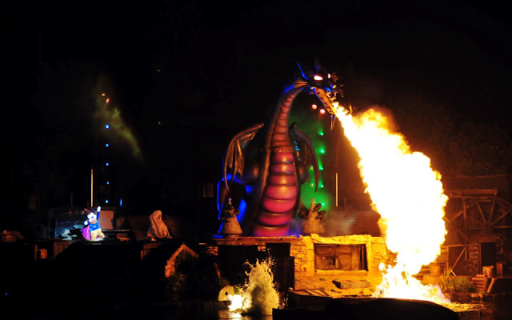
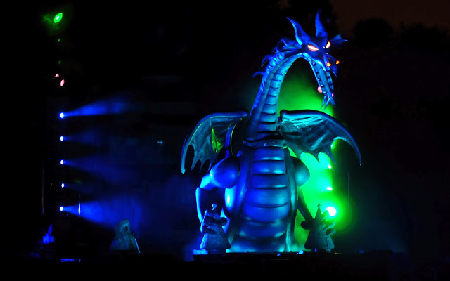

 Fantasmic! is a stage show attraction at Disneyland in California and Disney's Hollywood Studios in Florida. The show depicts Mickey dreaming about a variety of different scenes from Disney movies, but he is taking part in them. The scenes slowly move toward a climax, where a 45-foot-tall dragon animatronic, meant to be Maleficent from Sleeping Beauty, tries to fight Mickey and make his dream a nightmare. The dragon spouts fire at Mickey and moves its head to watch as he turns into Sorceror Mickey to fight back. This animatronic, while impressive, frequently broke down during his early days, leading to animated projections becoming a less realistic alternative. Because everything seemed to go wrong when it could, this dragon was given a special nickname by fans and imagineers, Murphy.
 "replacing the ol' head on a stick method" Murphy was meant to replace the previous version of the dragon in Fantasmic! which consisted mostly of a giant dragon head on a "stick" that had fabric wings blowing on the sides. A 45-foot-tall fully functioning animatronic was definetly an upgrade, but the sheer size and range of motion of Murphy led to many problems as soon as he was installed. His movements worked perfectly, able to blow fire down onto the stage where Mickey stood, as well as able to follow along with Mickey's choreography as he faught, Murphy was truly a complex beast, especially since he was 45 feet tall and could overlook the entire stage and audience. But, since his movements worked as expected, Murphy had to have other detrimetnal effects on the show.
Some of Murphy's many issues included tipping over because his base was not strong enough to support such a heavy creature, or the forceful movements of his body as he performed. During one show in August of 2010, Murphy was doing well, but slowly began to stop responding to his programming commands and tipped forward toward the Rivers of America, collapsing his big moment. This caused an abrupt end to the show (though Mickey did a very good job slaying him this time). Over the next few weeks, cranes could be seen slowly lifting Murphy's various parts back to the warehouse for repairs. The figure was so large that multipe trips needed to be made to remove him. The stage was repaired and the show continued, noticably Murphyless, with a projection in his place for months.
"dragon's days off" Unlike many other malfunctions such as this one, where the animatronic is removed, never to be seen again, in November of 2010, after being missing for nearly 3 full months, Murphy slowly got reinstalled. Now, until the COVID shutdown in March of 2020, Murphy was present in nearly every show. When he was "not feeling well," a "water screen" blocks him from audiences and an animated dragon sequence plays, which is much less impressive than Murphy, but is better than having a limp, dead dragon visible to guests. Hopefully Disneyland shows will resume soon, as the parks reopened n April 30, 2021 and Murphy will once again be seen during Fantasmic!